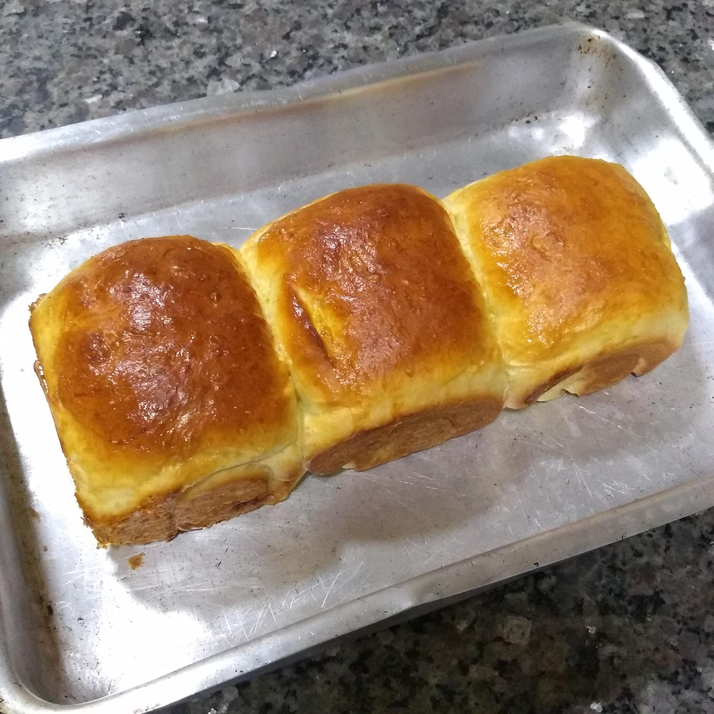

Milk Bread

Description
This japanese milk bread is the fluffiest, perfect everyday loaf, from sandwiches to toast!
Total time: 50 mins Cuisine: Japanese
Calories: 103kcal Author: Caroline's Cooking
Ingredients
For the tangzhong:
- 2 tbsp bread flour (approx 20g)
- 6 tbsp/90 ml water
For rest of loaf:
- 300 g bread flour (approx 2 tbsp + 2 cups)
- 7 g/2 tbsp fast acting yeast
- 120 ml milk, lukewarm of room temp
- 28 g unsalted butter, melted but not hot
- 5 ml/tsp salt
- 42 g/3 tbsp sugar (caster sugar/fine)
- 1 egg
To glaze:
Steps
For tangzhong - made slightly ahead
- Put water and flour for tangzhong in a small pan. Mix until smooth and no lumps remain
do this before turning on the heat.
- Warm the flour paste gently over a medium-low heat until it thickens, stirring constantly. You should see trails left by the spoon/whisk as you stir it. Set the pan aside to cool.
For the bread
- Measure out the remaining ingredients into a large bowl (flour, yeast, milk, melted butter, sugar, salt and egg). Add the cooled tangzhong - gently beat the egg into the tangzhong first or make sure you mix it well. Mix all the ingredients together then knead either in mixer or by hand on a floured surface. Add more flour if needed.
- Once the dough is no longer sticky, transfer to a lightly oiled bowl. Cover and leave to rise in a relatively warm place until doubled - around 1 hour.
- Once it has rise, knock back the dough, divide into three pieces. Set the other pieces to one side and roll one piece into an oval.

- Fold one side of dough over to halfway across the remaining dough then fold the other side on top so you have three layers (see photos above). Gently roll slightly, if needed, then roll up the piece of dough as you would a cinnamon roll.
- Repeat with the other pieces of dough then put all three rolls of dough in an oiled pan - 22x12cm (9x5in) or a bit smaller.
- Cover and leave to rise again until the loaf is just reaching the top of the pan. Preheat oven to 350F/175C. Lightly beat the egg and brush the top of the loaf with egg wash.
- Bake the loaf for approx 30 minutes until golden brown. If it browns too fast, tent with foil for the last part of cooking. Turn onto a cooling rack to cool before slicing.
- Enjoy!